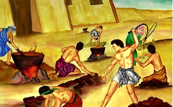
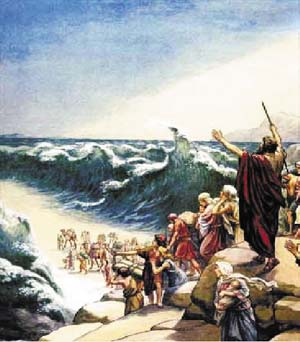

はじめに...
聖書の1冊目の書の名前、創世記とは始まりを意味します。創世記の最初の2つの章では、神が宇宙を創造されたこと について述べられています：星、地球、他のすべての惑星、そして現存している、あるいはこれまでに存在したすべての生き物が含まれます。神の最も特別な創造物は人類、すなわち人でした。人間は特別な存在です。なぜなら、それは神の似姿として創造されているからです。 （創世記1：26-27を参照してください）

アダムとイブ
創世記の第3章には、罪がどのように世界に 生まれたのかを物語っています。最初の男性と最初の女性であるアダムとイブは、神が彼らに嘘をついたと思いこまされました。その嘘を信じて、彼らは実際に神のようになることができると考えました。神がその不従順を知ったとき、アダムとイブは以前と同じように神との開かれた関係を享受できませんでした。罪が彼らを神から引き離したのでした。それは、一人を除いて、それ以来生きてきた人間すべてに同様でした：私たちは皆、罪によって神から引き離されているのです。

創世記の第4章と第5章では、人類の邪悪な心が膨らむという悲しい物語が続きます。神はまだ正しい生活を送るための命令を人類に与えておらず、人々は気ままに振る舞っていました。文明のすべては、あらゆるタイプの暴力と不道徳に耽っているようでした。自身の最高の被造物の哀れな状態を見て、神はそのような振る舞いができるものを創ったことを後悔しました。

創世記の第 4 章と第 5 章には、人類の邪悪さが増大する悲しい物語が続きます。 神はまだ私たちに正しく生きるための戒めを与えておらず、人々は自分の望むままに行動していました。 文明全体があらゆる種類の暴力と不道徳を放棄しているように見えました。 神は、ご自身の極度の疲労の悲しい状態を見て、そのような行動を許してしまったことを後悔されました。
ノア
神は罪深い被造物を見下ろすと、主と 共に歩む一人の男性、ノアを見つけました。神は人類を一掃し、ノアとその家族で新たに人類を始めることを決心しま した。創世記の第6章から第8章にかけては、神がどのようにして全人類を洪水で滅ぼし、ノアと妻、三人の息子とその妻達だけを救ったかが語られています。
創世記の第9章から第11章は、洪水後、ノアの息子であるセム、ハム、ヤペテによって地球がどのように再生されたか物語っています。第11章の終わりに、非常に特別な男性が紹介されます。神が人類の父になるようにと呼びかけ、神自身と呼んで差支えないとする人物です。


アブラハム
創世記で、聖書はノアのように「神と共に歩んだ」多くの人々について語っています。神と共に歩むには信仰が必要です。神は約束を守られるという疑いのない信念を持つことです。ノアにとって、神が洪水で地球の全人類を滅ぼすことを信じ、彼の周りの人々が彼をあざ笑っても、箱舟（大きな船）を建てよという神の指示に従うのは、強い信仰があったからでした。創世記第12章では、神が強い信仰を望む別の人物、アブラハムについて知ります。
神はアブラム（神は後に彼の名前をアブラハムに変えました）に多くのことを要求しました：故郷を離れ、行ったこともなく、誰一人知っている人のいない場所に移り住むことを求めたのです。服従と引き換えに、神はアブラハムに二つの約束をしました。
- カナンの地（現在のイスラエル）をアブラハムと彼の子孫に与えること
- アブラハムの子孫によって偉大な国家が創り出されること
アブラハムは内心、この約束はどちらも家族に災いをもたらすに違いない、と考えました。カナンの土地はすでに他人の領土であり、アブラハムとその妻には子供がいませんでした。そして、アブラハムの妻サラは、子供を産むには年を取りすぎていました。それでも、アブラハムは信仰を持っていたので、家族全員でカナンにむけて出発しました。
アブラハムの物語を創世記第12章から23章で読めば、彼の信仰心は完璧ではなかったことがわかります。彼は時々、神とそのタイミングを待つのではなく、「自分で問題を解決しようとしました」。それでも、創世記第15章第6節には、「アブラムは主を信じており、神はそれを義と信じていました。」とあります。
簡単でなくても私達が方法を見つけることができなくても、神は彼への信仰を持つように求められます。
神が約束されたように、サラは息子をもうけました。彼女とアブラハムは息子をイサクと名付けました。サラは、年をとっても子供が生まれたことを喜びました。
イサクが成長して結婚すると、二人の息子、ヤコブとエサウを授かりました。（創世記25:19から創世記30）
ヤコブには12人の息子がいました（彼らの名前のリストは創世記35:23-26にあります）。この12人の息子の名前が、イスラエルの12部族の名前となるのです。（神は実際にヤコブの名前をイスラエルに変えられました—創世記35:10）これらの12人の息子を通して、神は、アブラハムの家族が偉大な国家を創り出すという約束を果たされました。

モーセ
ヤコブの息子の一人であるヨセフはエジプトに行き、ファラオの宮廷で偉大な士官になりました（創世記第37章から第50章で読むことができます。これは長い話ですが、かなりの冒険談です）。最終的に、ヨセフの兄弟11人も全員、エジプトに移住しました。ヨセフが生きている間、彼の家族はファラオとのつながりがあったため、幸せに暮らしていました。
ヨセフの死後、世代が交代し、新しいファラオが権力を握りました。新王は、ヨセフが王家のお気に入りだったことを知りませんでした。この新しいファラオは、ユダヤ人（イスラエル人はユダヤ人またはヘブライ人とも言われていました）の数が大幅に増えているのを知りました。王は、ユダヤ人に政府を牛耳られるのはでないかと恐れ、イスラエル人（ユダヤ人）を全員、エジプトの奴隷としました。
出エジプト記第2章第23節では、イスラエル人がエジプトの奴隷として大いに苦しんだことが語られています。彼らは神に救いを求め、神は彼らの願いを聞き入れました。神は、ユダヤ人の中から一人の男性を選び、皆を奴隷から救う手助けをさせました。その男の名前はモーセでした。
神の呼びかけに耳を傾けたアブラハムとは異なり、モーセは最初、主が他の人を使うようにしむけようとました（出エジプト記4:1-14）。
神はモーセに、実際にファラオにイユダヤ人の奴隷を解放させるのはモーセではなく神であることを示されました。モーセは単に神の使者となるだけでした。
エジプトでは、偶像の神を数多く崇拝していました。アブラハムの神、イサクの神、ヤコブの神ではありませんでした。モーセが最初にファラオに近づいた時（出エジプト記5）、ファラオは「主とはだれか。私がそれに従わねばならないだと？」とあざ笑いました。
モーセは、再びファラオのところに行き、ユダヤ人の奴隷を解放するようにという二度目の要求をしました。今回、モーセは神からの警告を携えていました。「ファラオがユダヤ人を解放することに同意しなかった場合、神はエジプトに破壊、疫病、闇といった9つの災いを解き放たれるだろう。」というものです。驚くべきことに、これらすべての恐ろしい災いの後でも、ファラオは依然として神の力を信じず、ユダヤ人を解放しませんでした。（出エジプト記第7章第15節から出エジプト記第11章）10回目の災い（出エジプト記第12章）の後、ファラオがついにエジプトの奴隷を解放することに同意しました。エジプト人すべての家庭の長男が殺されるのです。しかし、神はユダヤ人の長子を救われました。神はユダヤ人に、子羊をいけにえに捧げ、その血を家のドアに塗るように指示されました。神が長子を殺すために来られたとき、羊の血をドアに塗るという指示に従ったユダヤ人の家をすべて「通り過ぎる」のです。
現在でも、ユダヤ人は彼らを奴隷から解放するのを助けた奇跡を祝うために毎年過越祭を行います。
モーセの導きで、ユダヤ人はエジプトから脱出する旅を始めました。神の手でエジプトにさまざまなことが起こった後でさえ、ファラオはもう一度ユダヤ人を束縛しようとしました。
エジプト軍はユダヤ人を紅海まで追いかけ、彼らを水際に追い詰めようと考えました（出エジプト記第14章）。 ユダヤ人はパニックに陥り始めましたが、モーセは神を信じるように、と言いました。 神はモーセに水のそばで杖を持ち上げるよう命じられました。 奇跡的に紅海の水が割れ、反対側に渡ることができる乾いた道ができました。ファラオの軍隊が同じ道を渡ろうとしたとき、海の水が両側から落ちてきて、兵をすべて溺れさせました。ついに、イスラエルの人々はエジプトを出て奴隷から解放されました。
エジプト軍はユダヤ人を紅海まで追いかけ、彼らを水際に追い詰めようと考えました（出エジプト記第14章）。 ユダヤ人はパニックに陥り始めましたが、モーセは神を信じるように、と言いました。 神はモーセに水のそばで杖を持ち上げるよう命じられました。 奇跡的に紅海の水が割れ、反対側に渡ることができる乾いた道ができました。ファラオの軍隊が同じ道を渡ろうとしたとき、海の水が両側から落ちてきて、兵をすべて溺れさせました。ついに、イスラエルの人々はエジプトを出て奴隷から解放されました。

十戒
大洪水の物語で見たように、神はまだ人間に戒律を与えていませんでした。神がアブラハムとその子孫に約束した土地へとユダヤ人がその道を歩み始めたとき、神はモーセにシナイ山の頂上に登るように命じられました。その、神の抗いがたい栄光から人々を守るために煙で覆われた山で、モーセは神の民に対する戒めを受けました（出エジプト記20:1-17）。
ユダヤ人がもはやエジプトに縛られていなかったからといって、すべての問題が終わったわけではありませんでした。神が彼らに約束した土地への旅の物語は、40年間分に及ぶのです！
ユダヤ人の信仰心は強くありませんでした。彼らはしばしば、神が彼らに与えてくださることを疑っていました。時々とても落胆し、実際にエジプトに戻ることさえ話していました。そして、おそらく最悪なことに、神をあまりに疑い、崇拝する偶像さえ作りました。

モーセの死の物語は、申命記の第34章で語られています。神がシナイ山で彼の人々に与えた戒律について詳しく話している内容は、申命記にあります。神は、人々が仲間のユダヤ人の間でどのように行動するか、そしてどのように神を礼拝するべきかについて述べます。